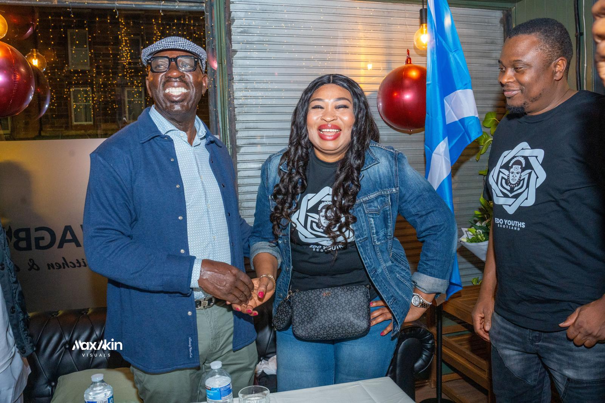
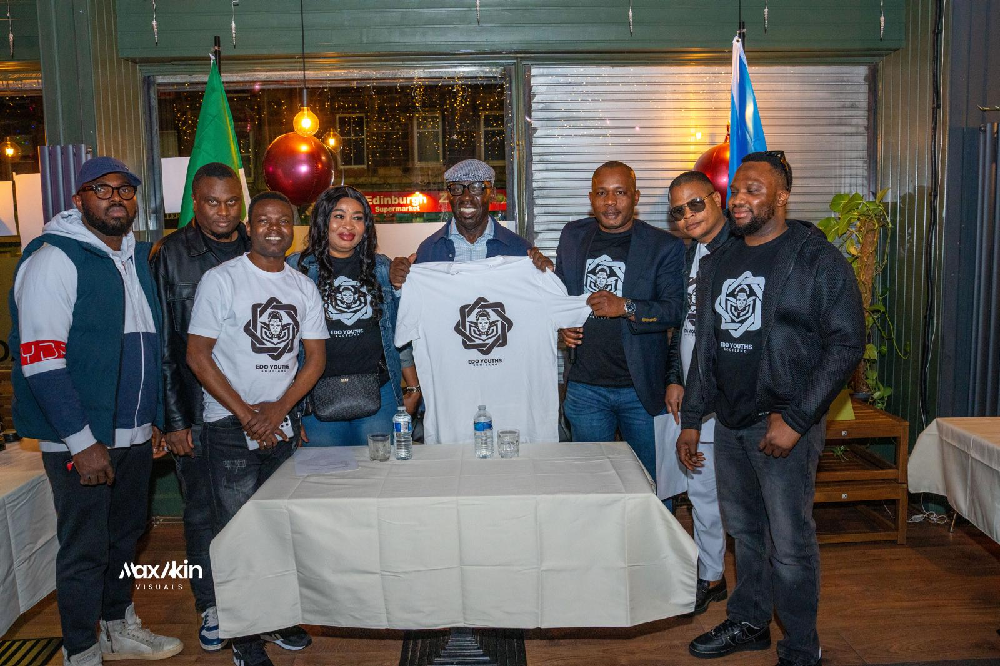
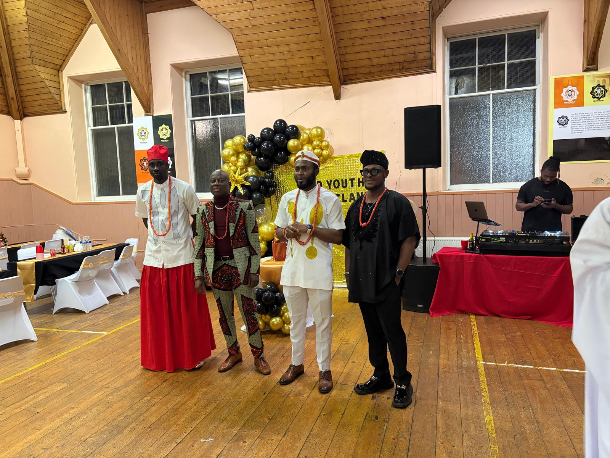

Belonging that becomes contribution.
EYS creates trusted spaces where young people, families, professionals and friends of the Edo community can find connection, support and a pathway forward in Scotland.
A home away from home, built through participation.
The community work is practical and human: welcome new members, reduce isolation, celebrate culture, signpost support and make talent visible before people are in crisis.
- Welcome and buddying New members are introduced to friendly faces, community norms and routes into social, cultural and practical support.
- Community circles Regular gatherings help members share experiences, build confidence and stay connected across cities, campuses and workplaces.
- Welfare signposting EYS helps people find appropriate advice, support services and regulated referrals where specialist help is needed.
- Member visibility The platform showcases professions, businesses, creativity, achievements and service to encourage pride and opportunity.
Culture, care and connection in motion.
EYS keeps culture visible while making room for the everyday work of friendship, mentoring, leadership and mutual support.



Community is strongest when people can both receive and give.
EYS welcomes people who can contribute time, hospitality, mentoring, venues, introductions or member benefits.
Welcome calls
Buddying
Mentoring
Community meals
Culture nights
Member showcases